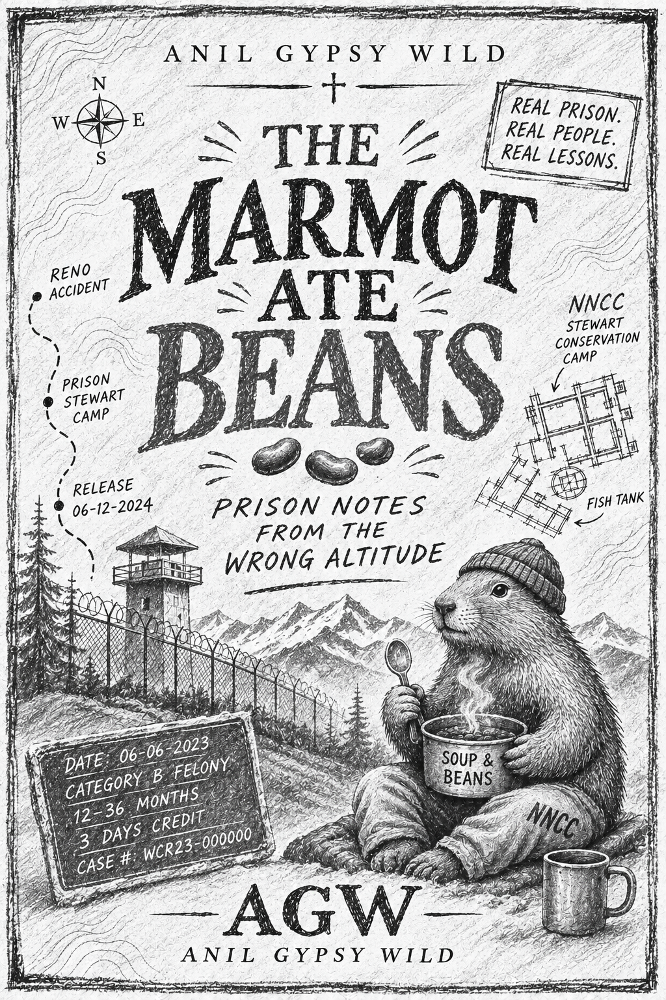

A PRISONER WITH A PhD. OR A PhD IN PRISON?
THE MARMOT ATE BEANS
Prison Notes from the Wrong Altitude
By Anil Gypsy Wild
I spent years studying human behavior.
Then I went to prison and became part of the population I was observing.
I cleaned toilets for a dollar an hour, watched men construct underground economies and documented the absurdities of incarceration on folded sheets of paper.
This is the book that came out of it.
READ FIRST. PAY WHAT YOU WANT.
$15 suggested. $20 or more includes the audiobook when it’s released.
No password. No mandatory payment. No publisher standing between author and reader.

The Golden Calf
THE GOLDEN CALF HUMMED AT SEVEN HUNDRED WATTS
What happens when grown men are deprived of almost everything except ramen, beans, commissary and a microwave?
How does a seven-hundred-watt appliance become the center of a prison’s social and economic universe?
What do Moses, the Golden Calf, prison food and American capitalism have in common?
Can a packet of ramen become currency?
Can a microwave become an altar?
And what happens when hungry men begin worshipping the only machine that makes their food taste marginally less like punishment?
In Exodus, they built an idol from gold. At Stewart Conservation Camp, we had a microwave.
Read an excerptTHE DIY GUIDE TO INCARCERATION
An entirely unauthorized field guide to surviving a system you never wanted to enter.
What should you know before entering an American jail?
What happens when your name becomes a number?
How do you navigate the invisible rules of prison life?
What does a scientist learn when the State takes away his computer, his running shoes and nearly every ordinary freedom?
And how do you preserve your mind when the institution controls almost everything else?
Read the DIY Guide excerptREAD IT. THEN DECIDE WHAT IT'S WORTH.
Download the EPUB free. There’s no registration. Contribute before you read, after you read, or skip payment altogether.
Suggested contribution $15. Contributions of $20 or more qualify for the audiobook when released.
- Zelle
- Pending account eligibility and payment details.
Audiobook delivery will use a private email address and payment confirmation. For the audiobook offer, choose Goods & Services when paying. Claim instructions are forthcoming.
Read / Download the EPUBSECOND SET: GIVE EQUIPMENT ANOTHER LIFE.
Second Set is a proposed nonprofit initiative. The goal is to get usable exercise equipment into correctional facilities that can safely and legally accept it.
- Collect retired equipment from gyms, recreation centers, universities, and manufacturers.
- Work with correctional facilities to confirm what they can accept.
- Coordinate refurbishment, transport, and delivery.
How I plan to fund it. I intend to match qualifying contributions within my means under a published commitment. I also intend to put book proceeds toward developing Second Set after publishing expenses and publicly disclosed author compensation.
Book payments are not tax-deductible. They go to the author while Second Set is in development.
Interested in partnering? I’d like to hear from gym operators, manufacturers, donors, and correctional-facility staff. I’ll post a contact here when it’s available.
ABOUT THE BOOK
A quantitative researcher goes to prison and watches people make an economy out of what the institution leaves them. The Marmot Ate Beans follows those trades alongside the quieter business of being a father from a distance.
It takes Christianity seriously enough to examine its hypocrisies, and watches how the State turns race and identity into categories that shape daily life.
Mountaineering and trail running give these notes another measure of freedom. The writing stays close to what people said and did, with all the dark humor and profanity that entails.
Print the coffee-shop flyer